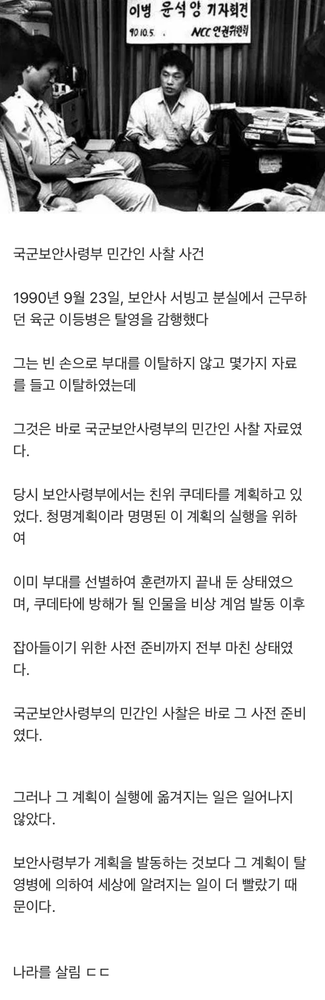

평양보다 서울을 더 많이 공격한 군대답다
크윽...
이젠 대놓고 ㅇㄱㄸ 언급들하네 ㅋㅋㅋ
계엄때 난리난거생각난다
좌우 안 가리고 그런 수준의 초대형 이벤트는 봐줌
그리고 그게 난리가 안 나면 그게 더 이상한 거 아니냐ㅋㅋㅋㅋㅋㅋㅋㅋㅋㅋ
옳고 그름을 떠나서지 좌우를 떠나서가 아닙니다
원래는 옳그떠이긴 한데 내 느낌엔 정치면이면 벤 사회면이면 훈방임
몇 년 전이랑 계획이 비슷했노
이놈들 대놓고 다 옳그떠로 도배하네 다 신고먹어라
이때다 싶어서 ㅇㄱㄸ 지르는 애들 많내
여기 개드립 맞지?..
ㅈ망한듯 ㅋㅋ
승희뭐하냐 진짜
저녁으로 라면먹고 담탐때리고있을듯
저 양반 요즘 재건축조합장하고 책도 냈더라. 방송 나와서 재건축 일했던 거 이야기하는데 재밌었음. ㅋㅋ
?? : 보안사에 근무하고있소
?? : 각하는 잘 계시죠?
지금당장 저배를나포할수있도록해
막혀서 새정부가 들어왔는데 이모양
야....야....